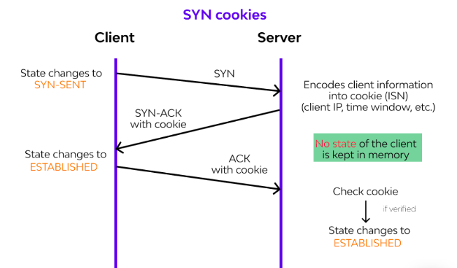
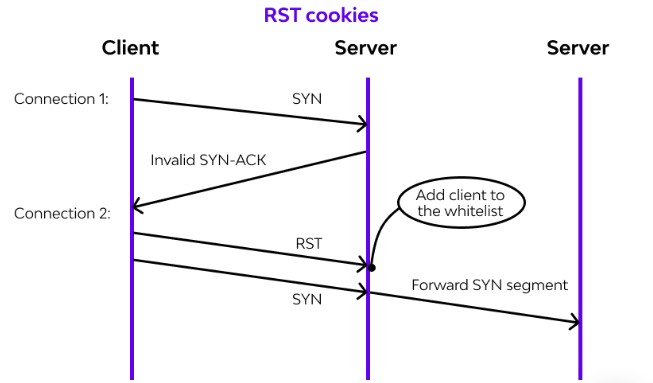

TCP Reset Attack is a type of attack in which attackers send forged TCP RST (Reset) packets to the host. This is the most common attack on the Internet which is causing a lot of problems. These attacks are mainly performed to shut down the websites which are not working with them. This attack can also be performed to perform a Distributed Denial-of-Service Attack
When a TCP connection is established between two computers, the sending computer sends a TCP RST (Reset) packet to the receiving computer.
Before sending the TCP RST (Reset) packet, the sending computer first checks whether the receiving computer is actually listening for the communication or not.
If the receiving computer is not listening for the communication, then the sending computer sends a TCP RST (Reset) packet to the receiving computer.
This TCP RST (Reset) packet is normally sent when the receiving computer has not sent an acknowledgment for some time.
If the receiving computer is actually listening for the communication, then the sending computer will not send a TCP RST (Reset) packet to the receiving computer.
Instead, the sending computer will send a TCP RST (Reset) packet to the sending computer.
But in TCP Reset Attack, the sending computer sends a TCP RST (Reset) packet to the receiving computer.
Servers are still powerless against SYN flood assaults, despite the fact that current working frameworks are better prepared to oversee assets, making it more difficult to flood association tables.
There are several common ways to mitigate SYN flood attacks, including:
1. Micro blocks
Instead of a total association object, supervisors can dispense a miniature record (as few as 16 bytes) in worker memory for each approaching SYN demand.
2. SYN cookies
The server creates a cookie as part of this procedure. To avoid dropping associations once the overabundance has been filled, the server responds to each association demand with a SYN-ACK parcel but then drops the SYN demand from the backlog, removing the solicitation from memory and leaving the port open and ready to make another association. If the association is a genuine request and a final ACK bundle is sent from the customer machine back to the server, the server will then reproduce (subject to certain constraints) the SYN build-up line section. While this moderation effort loses some data about the TCP connection, it is preferable to allowing refusal of administration to occur to authentic clients because of an assault.
3. RST cookies
The server purposefully sends an invalid SYN-ACK in response to the primary solicitation from a specific customer. This should result in the customer generating a RST parcel, signaling to the worker that something isn't quite right. If this is received, the employee recognizes that the request is genuine, logs the client, and accepts any resulting approaching associations.
4. Stack tweaking
To mitigate the impact of SYN floods, managers can change TCP stacks. This can be accomplished by either decreasing the break until a stack liberates memory allocated to an association or by specifically dropping approaching associations. Clearly, all of the preceding strategies rely on the target organization's ability to deal with large-scale volumetric DDoS attacks, with traffic volumes estimated in several Gigabits (or even many Gigabits) per second.
The Internet is a system for individual computers to exchange electronic messages, or packets of data. This system includes hardware to carry the messages (such as copper and fiber optics cables) and a formalized system for formatting the messages, called "protocols". The basic protocol used on the Internet is the Internet Protocol (IP), which is usually coupled with additional protocols such as TCP (Transmission Control Protocol[2]) or UDP (User Datagram Protocol). TCP/IP is the protocol set used for email and web browsing. Each protocol has a block of information, called a header, included near the front of each packet. Headers contain information about which computer sent the packet, which computer should receive it, the packet size, etc.
TCP is used with IP when a two-way virtual connection is required between two computers. TCP is a connection-oriented protocol and requires a logical connection to be established between two processes before data is exchanged (UDP on the other hand is a connectionless IP protocol.) A TCP/IP socket is used when communication between two computers (for example a workstation with a browser and a web server) by exchanging a stream of packets. Using a TCP connection gives the computers an easy way to exchange data items too big for a single packet, such as video clips, email attachments, or music files. Although some web pages are small enough for a single packet, they are sent over TCP connections for convenience.